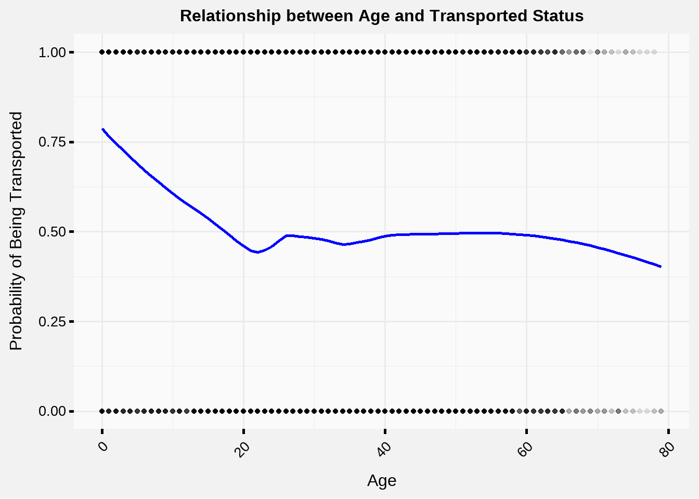
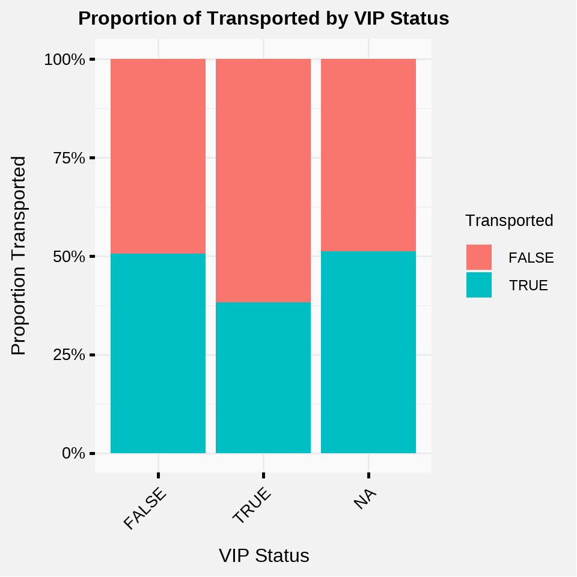
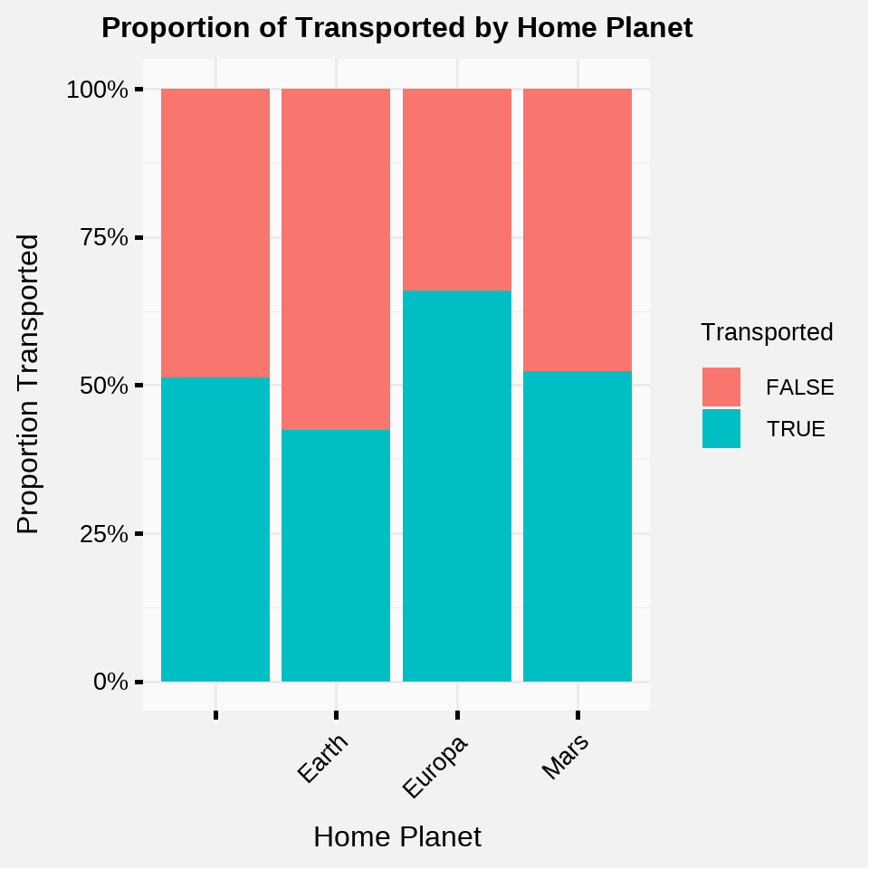

Spaceship Titanic - Introduction to Bayesian Models - Part 1
Introduction
This post is going to be an explanation on how to use Stan to write a simple Bayesian (probabilistic) model.
The analysis is broken into parts to be more digestible and beginner-friendly, so that I am able to document the entire model building process from start to finish including data exploration, writing Stan code, and model validation.
I will be working with the data from the Spaceship Titanic competition, which is a beginner friendly spin-off of the original Titanic dataset where the goal is to predict who on the Titanic lived and died after it crashed. In this challenge, I will be walking through the steps to create a Bayesian model that predicts whether passengers are transported to an alternate dimension or not.
Part 1: Data Intake and Exploration
Load the Data
The first steps in any data analysis done in R will be loading the libraries you want to use and reading in the data to a data.frame or a data.table object. I load the rstan package because I will be writing the main part of the model in Stan, and set the options to use all of the cores on my computer and not recompile the model every time I run it (Stan models have to be compiled and that can be a slow process to repeat.)
Code
library(rstan)
library(data.table)
library(dplyr)
library(ggplot2)
library(knitr)
library(plotly)
library(mgcv)
library(showtext)
library(flextable)
options(mc.cores = parallel::detectCores())
rstan_options(auto_write = TRUE)
showtext_auto()
sst_data <- data.table::fread("../../data/train.csv")For reference, I will show the first few rows of the data set. For the sake of keeping the post shorter, you can refer to the Kaggle link for the definitions of each of the data fields.
Code
head(sst_data) %>%
flextable() %>%
bold(part = "header") %>%
align(align = "center", part = "all")PassengerId | HomePlanet | CryoSleep | Cabin | Destination | Age | VIP | RoomService | FoodCourt | ShoppingMall | Spa | VRDeck | Name | Transported |
|---|---|---|---|---|---|---|---|---|---|---|---|---|---|
0001_01 | Europa | FALSE | B/0/P | TRAPPIST-1e | 39 | FALSE | 0 | 0 | 0 | 0 | 0 | Maham Ofracculy | FALSE |
0002_01 | Earth | FALSE | F/0/S | TRAPPIST-1e | 24 | FALSE | 109 | 9 | 25 | 549 | 44 | Juanna Vines | TRUE |
0003_01 | Europa | FALSE | A/0/S | TRAPPIST-1e | 58 | TRUE | 43 | 3576 | 0 | 6715 | 49 | Altark Susent | FALSE |
0003_02 | Europa | FALSE | A/0/S | TRAPPIST-1e | 33 | FALSE | 0 | 1283 | 371 | 3329 | 193 | Solam Susent | FALSE |
0004_01 | Earth | FALSE | F/1/S | TRAPPIST-1e | 16 | FALSE | 303 | 70 | 151 | 565 | 2 | Willy Santantines | TRUE |
0005_01 | Earth | FALSE | F/0/P | PSO J318.5-22 | 44 | FALSE | 0 | 483 | 0 | 291 | 0 | Sandie Hinetthews | TRUE |
Modeling Approach
After looking at the predictive fields available in this data set, the first thing I try to do is come up with a plan to approach the modeling structure.
I have a couple of initial thoughts here:
We are trying to predict the Transported field which is a boolean variable: either TRUE or FALSE.
This leads me to believe that logistic regression is probably the best and simplest modelling approach.
In statistical terms, this means we want a model with the following structure: \[ \log\left(\frac{\pi}{1-\pi}\right) = \alpha + \beta X \]
This transformation (often called the logit function or log-odds) is useful, because it is a function that maps values between 0 and 1, like probabilities, to real numbers.
In this model, \(\pi\) will represent our response (Probability % of being Transported) and the \(\beta\) will represent our predictive variables, so let’s explore some of the possibilities for \(\beta\).
Exploring VIP Status, Age, and Home Planet variables
I really want to start with a simple model and build from there, so I’ll start by just examining the relationship between a couple of the explanatory variables and the Transported response variable.
First of all, let’s see how many people were Transported in total.
Code
sst_data %>%
count(Transported) %>%
mutate(Proportion = scales::percent_format()(n / sum(n))) %>%
flextable() %>%
bold(part = "header") %>%
align(align = "center", part = "all")Transported | n | Proportion |
|---|---|---|
FALSE | 4315 | 49.64% |
TRUE | 4378 | 50.36% |
Looks like a fairly even split, which is good. It might be harder to model a huge imbalance of response classes, especially if you don’t have a lot of observations in the first place.
I’ve found visual analysis can be useful to see which of our variables might provide some information that explains a difference in categorizing who was transported and who was not transported.
Age
Code
ggplot(sst_data, aes(x = Age, y = as.numeric(Transported))) +
geom_point(alpha = 0.1) +
geom_smooth(method = "loess", formula = y ~ x, span = 0.5, se = FALSE, color = "blue") +
labs(title = "Relationship between Age and Transported Status",
x = "Age",
y = "Probability of Being Transported") +
rj_custom_theme()
There are 179 missing Age values in the dataset (which we will have to handle later.)
It looks like passengers from Age 0 to about Age 17 are much more likely to be transported, and then the effect kind of levels off after that.
VIP Status
Code
ggplot(sst_data, aes(x = VIP, fill = Transported)) +
geom_bar(position = "fill") +
scale_y_continuous(labels = scales::percent_format()) +
labs(title = "Proportion of Transported by VIP Status", x = "VIP Status", y = "Proportion Transported") +
rj_custom_theme()
- VIPs were transported at a 38.2% rate, while non-VIPs were transported at a 50.6% rate.
Home Planet
Code
ggplot(sst_data, aes(x = HomePlanet, fill = Transported)) +
geom_bar(position = "fill") +
scale_y_continuous(labels = scales::percent_format()) +
labs(title = "Proportion of Transported by Home Planet", x = "Home Planet", y = "Proportion Transported") +
rj_custom_theme()
It appears there are three possible Home Planets: Earth, Europa, and Mars.
They all have different Transportation proportions which makes it a great candidate for a categorical predictive variable.
The aliens really seem to have taken a liking to residents from Europa.
Summary
To summarize, it looks like a non-VIP from Europa that is between Age 0 and 17 has the highest risk factors for being abducted.
- It’s good to do sense checks on your exploration is saying, so let’s see if we can take a slice of the data (like a population that has two out of any three of these risk factors) and see how strong the effects we discovered are.
Code
sst_data %>%
select(`VIP`, `Age`, `HomePlanet`, `Transported`) %>%
filter((`VIP` == FALSE & `Age` < 18) | (`VIP` == FALSE & `HomePlanet` == "Europa") | (`Age` < 18 & `HomePlanet` == "Europa")) %>%
count(Transported) %>%
flextable() %>%
bold(part = "header") %>%
align(align = "center", part = "all")Transported | n |
|---|---|
FALSE | 1180 |
TRUE | 2119 |
It definitely seems like we have some potential predictive power if we use these variables since we were able to pull out twice as many TRUE as FALSE using this naive approach (not to be confused with a Naïve Bayes Classifier.)
In the next post I will explore how to take these three insights and formally build them into a probability model using Stan.
Part 2 Preview: Building the Model
That’s enough data exploration content for one blog post - thanks for reading and my goal going forward will be to create short and digestible posts that are easy to casually read and understand without investing too much of your time.
Keep these insights that I just discovered in mind, since those will be used in Part 2 to describe a Bayesian probability model on the odds our poor travelers were subjected to alien transportation.